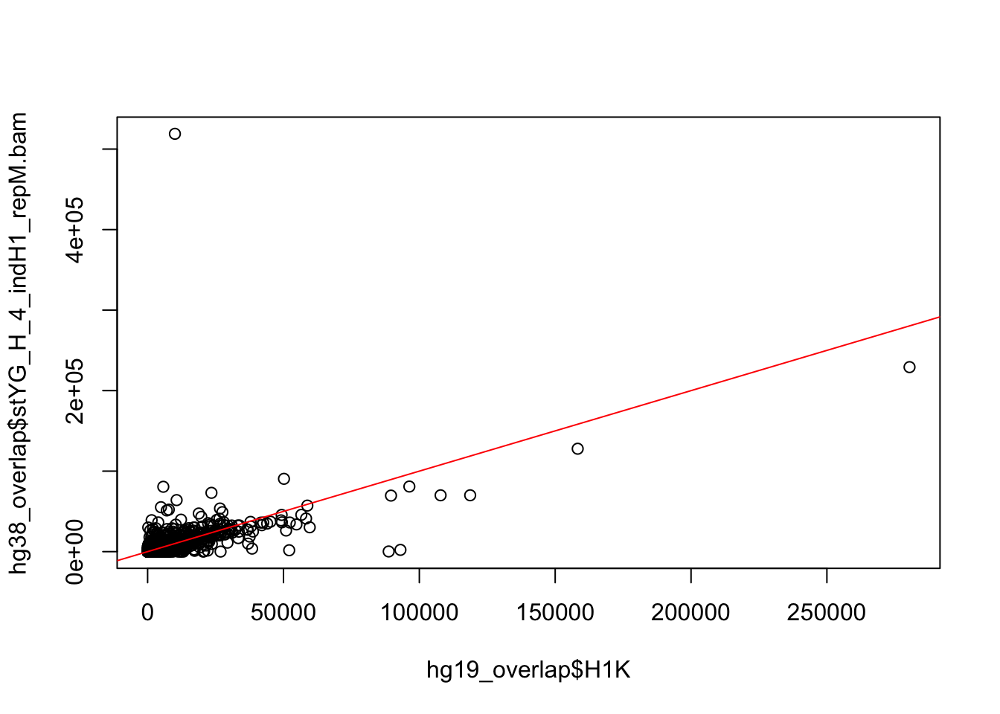
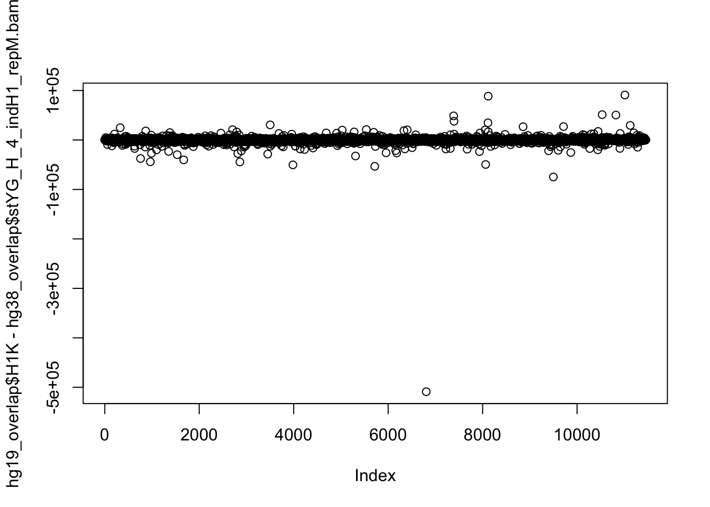
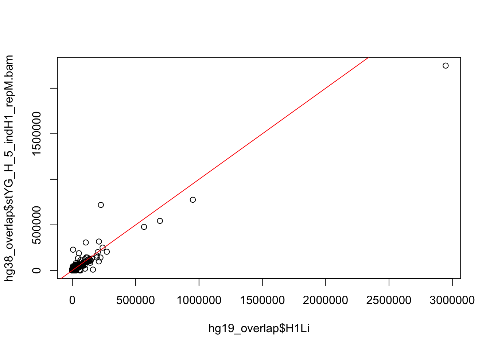
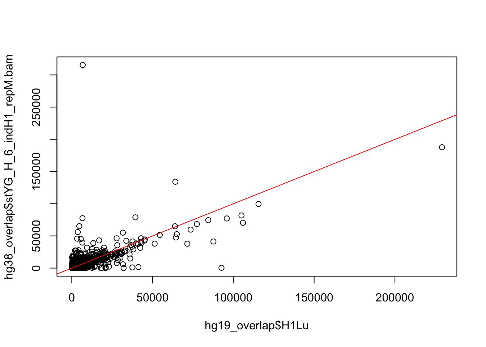
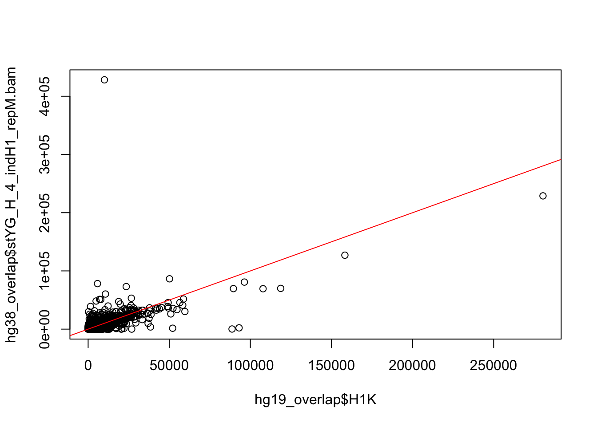
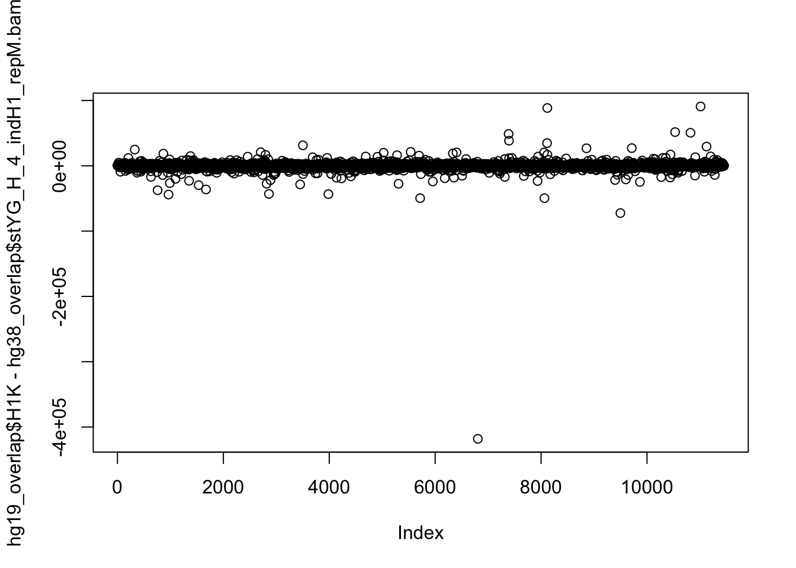
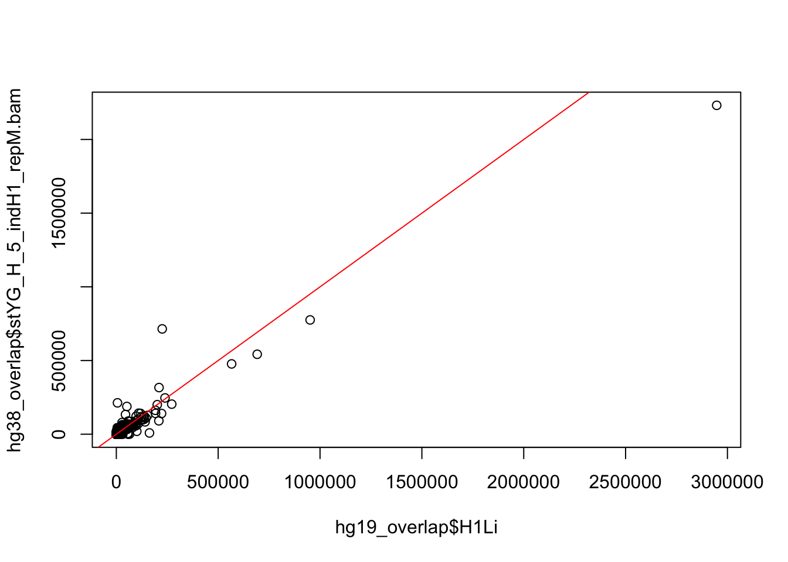
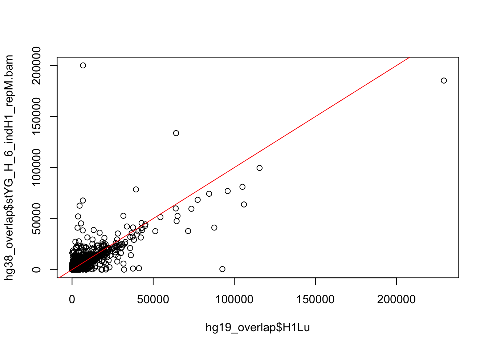

The goal of this script is to compare the gene counts from hg19 and hg38.
# Import hg19 raw counts
counts_12184 <- read.delim("~/Desktop/Reg_Evo_Primates/data/counts_12184.txt")
counts_hg19 <- counts_12184[,17:31]
counts_hg19 <- cbind(rownames(counts_12184), counts_hg19)
colnames(counts_hg19) <- c("Geneid", colnames(counts_12184[,17:31]))
# Import hg38 raw counts
hg38_gene_counts_with_mm <- read.delim("../data/hg38_gene_counts_with_mm.txt", comment.char="#")
# Subset to humans only
colnames_bjp <- c("Geneid", "stYG_H_3_indH2_repM.bam", "stYG_H_3_indH3_repM.bam", "stYG_H_3_indH4_repM.bam", "stYG_H_4_indH1_repM.bam", "stYG_H_4_indH2_repM.bam", "stYG_H_4_indH3_repM.bam", "stYG_H_4_indH4_repM.bam", "stYG_H_5_indH1_repM.bam", "stYG_H_5_indH2_repM.bam", "stYG_H_5_indH3_repM.bam", "stYG_H_5_indH4_repM.bam", "stYG_H_6_indH1_repM.bam", "stYG_H_6_indH2_repM.bam", "stYG_H_6_indH3_repM.bam", "stYG_H_6_indH4_repM.bam")
colnames(hg38_gene_counts_with_mm) %in% colnames_bjp## [1] TRUE FALSE FALSE FALSE FALSE FALSE FALSE TRUE TRUE TRUE TRUE
## [12] TRUE TRUE TRUE TRUE TRUE TRUE TRUE TRUE TRUE TRUE TRUEhg38_gene_counts <- hg38_gene_counts_with_mm[,8:22]
rownames(hg38_gene_counts) <- hg38_gene_counts_with_mm[,1]
hg38_gene_counts <- cbind(hg38_gene_counts_with_mm[,1], hg38_gene_counts)
colnames(hg38_gene_counts) <- colnames_bjpgene_compare <- rownames(counts_hg19) %in% rownames(hg38_gene_counts)
summary(gene_compare)## Mode FALSE TRUE
## logical 730 11454gene_compare_merge <- merge(counts_hg19, hg38_gene_counts, by = "Geneid")
hg19_overlap <- gene_compare_merge[,1:16]
overlap_numbers <- c(1, 17:31)
hg38_overlap <- gene_compare_merge[,overlap_numbers]Identify overlaps
H1K- stYG_H_4_indH1_repM.bam H1Li- stYG_H_5_indH1_repM.bam H1Lu- stYG_H_6_indH1_repM.bam
H2H- stYG_H_3_indH2_repM.bam H2K- stYG_H_4_indH2_repM.bam H2Li- stYG_H_5_indH2_repM.bam H2Lu- stYG_H_6_indH2_repM.bam
H3H- stYG_H_3_indH3_repM.bam H3K- stYG_H_4_indH3_repM.bam H3Li- stYG_H_5_indH3_repM.bam H3Lu- stYG_H_6_indH3_repM.bam
H4H- stYG_H_3_indH4_repM.bam H4K- stYG_H_4_indH4_repM.bam H4Li- stYG_H_5_indH4_repM.bam H4Lu- stYG_H_6_indH4_repM.bam
cor(hg19_overlap$H1K, hg38_overlap$stYG_H_4_indH1_repM.bam)## [1] 0.6069429cor.test(hg19_overlap$H1K, hg38_overlap$stYG_H_4_indH1_repM.bam)##
## Pearson's product-moment correlation
##
## data: hg19_overlap$H1K and hg38_overlap$stYG_H_4_indH1_repM.bam
## t = 81.726, df = 11452, p-value < 2.2e-16
## alternative hypothesis: true correlation is not equal to 0
## 95 percent confidence interval:
## 0.5952456 0.6183831
## sample estimates:
## cor
## 0.6069429cor(hg19_overlap$H1Li, hg38_overlap$stYG_H_5_indH1_repM.bam)## [1] 0.9633311cor(hg19_overlap$H1Lu, hg38_overlap$stYG_H_6_indH1_repM.bam)## [1] 0.7251576cor(hg19_overlap$H2H, hg38_overlap$stYG_H_3_indH2_repM.bam)## [1] 0.8265143cor(hg19_overlap$H2K, hg38_overlap$stYG_H_4_indH2_repM.bam)## [1] 0.890096cor(hg19_overlap$H2Li, hg38_overlap$stYG_H_5_indH2_repM.bam)## [1] 0.8658459cor(hg19_overlap$H2Lu, hg38_overlap$stYG_H_6_indH2_repM.bam)## [1] 0.8154343cor(hg19_overlap$H3H, hg38_overlap$stYG_H_3_indH3_repM.bam)## [1] 0.6997069cor(hg19_overlap$H3K, hg38_overlap$stYG_H_4_indH3_repM.bam)## [1] 0.8107131cor(hg19_overlap$H3Li, hg38_overlap$stYG_H_5_indH3_repM.bam)## [1] 0.9868997cor(hg19_overlap$H3Lu, hg38_overlap$stYG_H_6_indH3_repM.bam)## [1] 0.8357508cor(hg19_overlap$H4H, hg38_overlap$stYG_H_3_indH4_repM.bam)## [1] 0.7781797cor(hg19_overlap$H4K, hg38_overlap$stYG_H_4_indH4_repM.bam)## [1] 0.8501929cor(hg19_overlap$H4Li, hg38_overlap$stYG_H_5_indH4_repM.bam)## [1] 0.9029145cor(hg19_overlap$H4Lu, hg38_overlap$stYG_H_6_indH4_repM.bam)## [1] 0.7878426corrlation_matrix <- as.data.frame(c(0.6069429, 0.9633311, 0.7251576, 0.8265143, 0.890096, 0.8658459, 0.8154343, 0.6997069, 0.8107131, 0.9868997, 0.8357508, 0.7781797, 0.8501929, 0.9029145, 0.7878426))
summary(corrlation_matrix)## c(0.6069429, 0.9633311, 0.7251576, 0.8265143, 0.890096, 0.8658459, 0.8154343, 0.6997069, 0.8107131, 0.9868997, 0.8357508, 0.7781797, 0.8501929, 0.9029145, 0.7878426)
## Min. :0.6069
## 1st Qu.:0.7830
## Median :0.8265
## Mean :0.8230
## 3rd Qu.:0.8780
## Max. :0.9869cor(hg19_overlap$H1K, hg38_overlap$stYG_H_4_indH1_repM.bam, method = c("spearman"))## [1] 0.7768866cor(hg19_overlap$H1Li, hg38_overlap$stYG_H_5_indH1_repM.bam, method = c("spearman"))## [1] 0.845142cor(hg19_overlap$H1Lu, hg38_overlap$stYG_H_6_indH1_repM.bam, method = c("spearman"))## [1] 0.7884129cor(hg19_overlap$H2H, hg38_overlap$stYG_H_3_indH2_repM.bam, method = c("spearman"))## [1] 0.7864812cor(hg19_overlap$H2K, hg38_overlap$stYG_H_4_indH2_repM.bam, method = c("spearman"))## [1] 0.7700773cor(hg19_overlap$H2Li, hg38_overlap$stYG_H_5_indH2_repM.bam, method = c("spearman"))## [1] 0.7893072cor(hg19_overlap$H2Lu, hg38_overlap$stYG_H_6_indH2_repM.bam, method = c("spearman"))## [1] 0.8250774cor(hg19_overlap$H3H, hg38_overlap$stYG_H_3_indH3_repM.bam, method = c("spearman"))## [1] 0.7945612cor(hg19_overlap$H3K, hg38_overlap$stYG_H_4_indH3_repM.bam, method = c("spearman"))## [1] 0.7880498cor(hg19_overlap$H3Li, hg38_overlap$stYG_H_5_indH3_repM.bam, method = c("spearman"))## [1] 0.7680105cor(hg19_overlap$H3Lu, hg38_overlap$stYG_H_6_indH3_repM.bam, method = c("spearman"))## [1] 0.8365382cor(hg19_overlap$H4H, hg38_overlap$stYG_H_3_indH4_repM.bam, method = c("spearman"))## [1] 0.7999359cor(hg19_overlap$H4K, hg38_overlap$stYG_H_4_indH4_repM.bam, method = c("spearman"))## [1] 0.8052154cor(hg19_overlap$H4Li, hg38_overlap$stYG_H_5_indH4_repM.bam, method = c("spearman"))## [1] 0.7556615cor(hg19_overlap$H4Lu, hg38_overlap$stYG_H_6_indH4_repM.bam, method = c("spearman"))## [1] 0.8259926# Plots
plot(hg19_overlap$H1K, hg38_overlap$stYG_H_4_indH1_repM.bam)
abline(0,1, col = "red")
summary(hg19_overlap$H1K > hg38_overlap$stYG_H_4_indH1_repM.bam)## Mode FALSE TRUE
## logical 4144 7310summary(hg19_overlap$H1K - hg38_overlap$stYG_H_4_indH1_repM.bam)## Min. 1st Qu. Median Mean 3rd Qu. Max.
## -508928 -213 78 -57 377 90877plot(hg19_overlap$H1K - hg38_overlap$stYG_H_4_indH1_repM.bam, breaks= 100)## Warning in plot.window(...): "breaks" is not a graphical parameter## Warning in plot.xy(xy, type, ...): "breaks" is not a graphical parameter## Warning in axis(side = side, at = at, labels = labels, ...): "breaks" is
## not a graphical parameter
## Warning in axis(side = side, at = at, labels = labels, ...): "breaks" is
## not a graphical parameter## Warning in box(...): "breaks" is not a graphical parameter## Warning in title(...): "breaks" is not a graphical parameter
plot(hg19_overlap$H1Li, hg38_overlap$stYG_H_5_indH1_repM.bam)
abline(0,1, col = "red")
plot(hg19_overlap$H1Lu, hg38_overlap$stYG_H_6_indH1_repM.bam)
abline(0,1, col = "red")
# Import hg38 raw counts
hg38_gene_counts_with_mm <- read.delim("../data/hg38_gene_counts_no_mm.txt", comment.char="#")
# Subset to humans only
colnames_bjp <- c("Geneid", "stYG_H_3_indH2_repM.bam", "stYG_H_3_indH3_repM.bam", "stYG_H_3_indH4_repM.bam", "stYG_H_4_indH1_repM.bam", "stYG_H_4_indH2_repM.bam", "stYG_H_4_indH3_repM.bam", "stYG_H_4_indH4_repM.bam", "stYG_H_5_indH1_repM.bam", "stYG_H_5_indH2_repM.bam", "stYG_H_5_indH3_repM.bam", "stYG_H_5_indH4_repM.bam", "stYG_H_6_indH1_repM.bam", "stYG_H_6_indH2_repM.bam", "stYG_H_6_indH3_repM.bam", "stYG_H_6_indH4_repM.bam")
colnames(hg38_gene_counts_with_mm) %in% colnames_bjp## [1] TRUE FALSE FALSE FALSE FALSE FALSE FALSE TRUE TRUE TRUE TRUE
## [12] TRUE TRUE TRUE TRUE TRUE TRUE TRUE TRUE TRUE TRUE TRUEhg38_gene_counts <- hg38_gene_counts_with_mm[,8:22]
rownames(hg38_gene_counts) <- hg38_gene_counts_with_mm[,1]
hg38_gene_counts <- cbind(hg38_gene_counts_with_mm[,1], hg38_gene_counts)
colnames(hg38_gene_counts) <- colnames_bjpgene_compare <- rownames(counts_hg19) %in% rownames(hg38_gene_counts)
summary(gene_compare)## Mode FALSE TRUE
## logical 730 11454gene_compare_merge <- merge(counts_hg19, hg38_gene_counts, by = "Geneid")
hg19_overlap <- gene_compare_merge[,1:16]
overlap_numbers <- c(1, 17:31)
hg38_overlap <- gene_compare_merge[,overlap_numbers]Identify overlaps
H1K- stYG_H_4_indH1_repM.bam H1Li- stYG_H_5_indH1_repM.bam H1Lu- stYG_H_6_indH1_repM.bam
H2H- stYG_H_3_indH2_repM.bam H2K- stYG_H_4_indH2_repM.bam H2Li- stYG_H_5_indH2_repM.bam H2Lu- stYG_H_6_indH2_repM.bam
H3H- stYG_H_3_indH3_repM.bam H3K- stYG_H_4_indH3_repM.bam H3Li- stYG_H_5_indH3_repM.bam H3Lu- stYG_H_6_indH3_repM.bam
H4H- stYG_H_3_indH4_repM.bam H4K- stYG_H_4_indH4_repM.bam H4Li- stYG_H_5_indH4_repM.bam H4Lu- stYG_H_6_indH4_repM.bam
cor(hg19_overlap$H1K, hg38_overlap$stYG_H_4_indH1_repM.bam)## [1] 0.659611cor.test(hg19_overlap$H1K, hg38_overlap$stYG_H_4_indH1_repM.bam)##
## Pearson's product-moment correlation
##
## data: hg19_overlap$H1K and hg38_overlap$stYG_H_4_indH1_repM.bam
## t = 93.916, df = 11452, p-value < 2.2e-16
## alternative hypothesis: true correlation is not equal to 0
## 95 percent confidence interval:
## 0.6491388 0.6698332
## sample estimates:
## cor
## 0.659611cor(hg19_overlap$H1Li, hg38_overlap$stYG_H_5_indH1_repM.bam)## [1] 0.9667593cor(hg19_overlap$H1Lu, hg38_overlap$stYG_H_6_indH1_repM.bam)## [1] 0.7978478cor(hg19_overlap$H2H, hg38_overlap$stYG_H_3_indH2_repM.bam)## [1] 0.8130906cor(hg19_overlap$H2K, hg38_overlap$stYG_H_4_indH2_repM.bam)## [1] 0.8981138cor(hg19_overlap$H2Li, hg38_overlap$stYG_H_5_indH2_repM.bam)## [1] 0.8700223cor(hg19_overlap$H2Lu, hg38_overlap$stYG_H_6_indH2_repM.bam)## [1] 0.8307625cor(hg19_overlap$H3H, hg38_overlap$stYG_H_3_indH3_repM.bam)## [1] 0.6664122cor(hg19_overlap$H3K, hg38_overlap$stYG_H_4_indH3_repM.bam)## [1] 0.8323257cor(hg19_overlap$H3Li, hg38_overlap$stYG_H_5_indH3_repM.bam)## [1] 0.9873673cor(hg19_overlap$H3Lu, hg38_overlap$stYG_H_6_indH3_repM.bam)## [1] 0.8522485cor(hg19_overlap$H4H, hg38_overlap$stYG_H_3_indH4_repM.bam)## [1] 0.7478594cor(hg19_overlap$H4K, hg38_overlap$stYG_H_4_indH4_repM.bam)## [1] 0.8713867cor(hg19_overlap$H4Li, hg38_overlap$stYG_H_5_indH4_repM.bam)## [1] 0.9034255cor(hg19_overlap$H4Lu, hg38_overlap$stYG_H_6_indH4_repM.bam)## [1] 0.8135062corrlation_matrix <- as.data.frame(c(0.659611, 0.9667593, 0.7978478, 0.8130906, 0.8981138, 0.8700223, 0.8307625, 0.6664122, 0.8323257, 0.9873673, 0.8522485, 0.7478594, 0.8713867, 0.9034255, 0.8135062))
summary(corrlation_matrix)## c(0.659611, 0.9667593, 0.7978478, 0.8130906, 0.8981138, 0.8700223, 0.8307625, 0.6664122, 0.8323257, 0.9873673, 0.8522485, 0.7478594, 0.8713867, 0.9034255, 0.8135062)
## Min. :0.6596
## 1st Qu.:0.8055
## Median :0.8323
## Mean :0.8340
## 3rd Qu.:0.8848
## Max. :0.9874cor(hg19_overlap$H1K, hg38_overlap$stYG_H_4_indH1_repM.bam, method = c("spearman"))## [1] 0.7788484cor(hg19_overlap$H1Li, hg38_overlap$stYG_H_5_indH1_repM.bam, method = c("spearman"))## [1] 0.8463768cor(hg19_overlap$H1Lu, hg38_overlap$stYG_H_6_indH1_repM.bam, method = c("spearman"))## [1] 0.7899065cor(hg19_overlap$H2H, hg38_overlap$stYG_H_3_indH2_repM.bam, method = c("spearman"))## [1] 0.788004cor(hg19_overlap$H2K, hg38_overlap$stYG_H_4_indH2_repM.bam, method = c("spearman"))## [1] 0.7717076cor(hg19_overlap$H2Li, hg38_overlap$stYG_H_5_indH2_repM.bam, method = c("spearman"))## [1] 0.7911631cor(hg19_overlap$H2Lu, hg38_overlap$stYG_H_6_indH2_repM.bam, method = c("spearman"))## [1] 0.8268586cor(hg19_overlap$H3H, hg38_overlap$stYG_H_3_indH3_repM.bam, method = c("spearman"))## [1] 0.7963937cor(hg19_overlap$H3K, hg38_overlap$stYG_H_4_indH3_repM.bam, method = c("spearman"))## [1] 0.7899628cor(hg19_overlap$H3Li, hg38_overlap$stYG_H_5_indH3_repM.bam, method = c("spearman"))## [1] 0.7699571cor(hg19_overlap$H3Lu, hg38_overlap$stYG_H_6_indH3_repM.bam, method = c("spearman"))## [1] 0.8380762cor(hg19_overlap$H4H, hg38_overlap$stYG_H_3_indH4_repM.bam, method = c("spearman"))## [1] 0.8006979cor(hg19_overlap$H4K, hg38_overlap$stYG_H_4_indH4_repM.bam, method = c("spearman"))## [1] 0.8066451cor(hg19_overlap$H4Li, hg38_overlap$stYG_H_5_indH4_repM.bam, method = c("spearman"))## [1] 0.757238cor(hg19_overlap$H4Lu, hg38_overlap$stYG_H_6_indH4_repM.bam, method = c("spearman"))## [1] 0.8270654# Plots
plot(hg19_overlap$H1K, hg38_overlap$stYG_H_4_indH1_repM.bam)
abline(0,1, col = "red")
summary(hg19_overlap$H1K > hg38_overlap$stYG_H_4_indH1_repM.bam)## Mode FALSE TRUE
## logical 4078 7376summary(hg19_overlap$H1K - hg38_overlap$stYG_H_4_indH1_repM.bam)## Min. 1st Qu. Median Mean 3rd Qu. Max.
## -418095 -200 82 -20 385 90877plot(hg19_overlap$H1K - hg38_overlap$stYG_H_4_indH1_repM.bam, breaks= 100)## Warning in plot.window(...): "breaks" is not a graphical parameter## Warning in plot.xy(xy, type, ...): "breaks" is not a graphical parameter## Warning in axis(side = side, at = at, labels = labels, ...): "breaks" is
## not a graphical parameter
## Warning in axis(side = side, at = at, labels = labels, ...): "breaks" is
## not a graphical parameter## Warning in box(...): "breaks" is not a graphical parameter## Warning in title(...): "breaks" is not a graphical parameter
plot(hg19_overlap$H1Li, hg38_overlap$stYG_H_5_indH1_repM.bam)
abline(0,1, col = "red")
plot(hg19_overlap$H1Lu, hg38_overlap$stYG_H_6_indH1_repM.bam)
abline(0,1, col = "red")
# Find top 10% of genes that are different
summary(abs(hg19_overlap$H1K - hg38_overlap$stYG_H_4_indH1_repM.bam))## Min. 1st Qu. Median Mean 3rd Qu. Max.
## 0.0 107.0 320.0 958.8 858.0 418095.0summary(abs(hg19_overlap$H1K - hg38_overlap$stYG_H_4_indH1_repM.bam)/hg19_overlap$H1K)## Min. 1st Qu. Median Mean 3rd Qu. Max.
## 0.0000 0.1209 0.2557 Inf 0.7681 Infsort((abs(hg19_overlap$H1K - hg38_overlap$stYG_H_4_indH1_repM.bam)/hg19_overlap$H1K))[11000:11454]## [1] 4.395939 4.403909 4.423977 4.427885 4.455128 4.457627
## [7] 4.460613 4.490272 4.521008 4.536842 4.543750 4.545657
## [13] 4.552941 4.554455 4.556923 4.563758 4.567742 4.569079
## [19] 4.583333 4.593373 4.607370 4.614534 4.631491 4.632199
## [25] 4.647053 4.650862 4.656250 4.656566 4.664234 4.664336
## [31] 4.672727 4.675451 4.686957 4.707022 4.707986 4.714286
## [37] 4.726923 4.727612 4.732342 4.736434 4.737589 4.749035
## [43] 4.756906 4.774775 4.778947 4.779295 4.789189 4.802721
## [49] 4.822511 4.832714 4.853933 4.856266 4.857143 4.870432
## [55] 4.878431 4.879781 4.905138 4.920290 4.933071 4.934426
## [61] 4.941799 4.947368 4.959757 4.965517 4.966002 4.981013
## [67] 4.984055 4.985098 4.989305 4.990196 4.997010 5.000000
## [73] 5.000000 5.015504 5.021505 5.022099 5.049628 5.054321
## [79] 5.074169 5.077703 5.083333 5.123909 5.147253 5.157563
## [85] 5.163265 5.192308 5.215054 5.225434 5.235127 5.248447
## [91] 5.258929 5.259259 5.267857 5.270701 5.279570 5.280000
## [97] 5.283505 5.317797 5.318182 5.327103 5.338235 5.343511
## [103] 5.409091 5.418136 5.423077 5.428571 5.443758 5.454106
## [109] 5.456790 5.462500 5.474453 5.484375 5.500000 5.507463
## [115] 5.516086 5.516923 5.526174 5.550459 5.557078 5.581140
## [121] 5.597561 5.624535 5.636752 5.651948 5.657609 5.670000
## [127] 5.680000 5.682500 5.686275 5.687805 5.688889 5.691304
## [133] 5.725000 5.744318 5.746914 5.791667 5.825893 5.829787
## [139] 5.881690 5.906667 5.909091 5.913333 5.915937 5.936427
## [145] 5.945205 5.958656 5.961672 5.972906 5.982343 5.985258
## [151] 6.000000 6.006452 6.029310 6.038961 6.058824 6.065041
## [157] 6.072937 6.075301 6.096317 6.129032 6.129950 6.147368
## [163] 6.148315 6.149758 6.170732 6.236364 6.240000 6.241604
## [169] 6.271111 6.290041 6.366071 6.377323 6.399083 6.403922
## [175] 6.418067 6.425532 6.426316 6.432000 6.446809 6.463542
## [181] 6.482143 6.500990 6.512605 6.515152 6.538546 6.595318
## [187] 6.629921 6.632768 6.676136 6.698225 6.705752 6.706349
## [193] 6.706667 6.712813 6.744681 6.770925 6.771429 6.771930
## [199] 6.779412 6.780362 6.781095 6.781915 6.820312 6.833333
## [205] 6.875000 6.885246 6.900000 6.905830 6.937500 6.939627
## [211] 6.947368 6.967105 6.969231 7.008621 7.014124 7.028579
## [217] 7.042105 7.069048 7.069767 7.074468 7.093897 7.129412
## [223] 7.133758 7.134058 7.268908 7.323529 7.324324 7.343891
## [229] 7.344768 7.351201 7.390000 7.408560 7.431267 7.451613
## [235] 7.470339 7.514019 7.517345 7.534653 7.535433 7.538462
## [241] 7.548246 7.583333 7.586420 7.593220 7.600000 7.604317
## [247] 7.605364 7.696970 7.748792 7.783505 7.795082 7.802198
## [253] 7.803571 7.818182 7.824176 7.858974 7.933532 7.945055
## [259] 8.000000 8.092715 8.131148 8.159004 8.195122 8.206557
## [265] 8.250000 8.360656 8.362543 8.377337 8.403727 8.403909
## [271] 8.423077 8.460377 8.540000 8.567568 8.602606 8.604701
## [277] 8.612766 8.652632 8.687500 8.694118 8.696275 8.698413
## [283] 8.802740 8.822344 8.879121 8.896104 8.919298 8.984190
## [289] 9.068027 9.079755 9.092715 9.171756 9.226190 9.284404
## [295] 9.312849 9.334129 9.361111 9.393393 9.400000 9.400000
## [301] 9.415842 9.440994 9.504239 9.505263 9.550360 9.662551
## [307] 9.697917 9.772947 9.887367 9.893443 9.901316 10.050847
## [313] 10.063636 10.110000 10.188049 10.210000 10.330435 10.405229
## [319] 10.409091 10.432665 10.436823 10.472222 10.474138 10.518519
## [325] 10.552219 10.614679 10.622356 10.672598 10.700000 10.775862
## [331] 10.800000 10.858513 11.004016 11.011050 11.100877 11.175573
## [337] 11.206147 11.258667 11.298387 11.386525 11.441048 11.650428
## [343] 11.656566 11.855769 11.876323 11.929412 11.994460 12.032258
## [349] 12.192308 12.211806 12.220930 12.267857 12.312102 12.411765
## [355] 12.493947 12.548873 12.580559 12.638655 12.701389 12.778689
## [361] 12.836923 12.907895 12.981928 13.031250 13.145455 13.448071
## [367] 13.490196 13.561111 13.578947 13.594059 13.614693 13.746988
## [373] 13.807107 14.028249 14.309278 14.641304 15.125000 15.302083
## [379] 15.342105 15.450000 15.559748 15.704348 15.770950 15.858025
## [385] 15.862857 15.864769 16.063492 16.160000 16.877419 17.208333
## [391] 17.392405 17.400000 17.857143 18.128472 18.200000 18.416058
## [397] 18.456311 18.600000 18.881517 19.200000 19.340000 19.472973
## [403] 19.699115 19.813333 19.857143 19.935685 19.971098 20.358804
## [409] 20.390152 20.569444 20.600000 20.899329 21.130435 21.453039
## [415] 21.766355 22.781818 23.250000 23.687500 24.000000 24.020000
## [421] 24.214559 24.473227 24.521429 24.704918 25.280702 25.390508
## [427] 25.400000 25.438469 25.578125 26.020000 27.105263 27.414141
## [433] 27.715596 30.119048 30.308772 31.055556 33.169355 37.572222
## [439] 38.846847 41.622200 45.514286 46.343750 49.269231 54.529412
## [445] 57.330275 63.200000 64.500000 66.206897 72.944444 76.481013
## [451] 128.982609 146.000000 Inf Inf Inf# Load libraries
library("gplots")## Warning: package 'gplots' was built under R version 3.4.4##
## Attaching package: 'gplots'## The following object is masked from 'package:stats':
##
## lowesslibrary("ggplot2")
library("RColorBrewer")
library("scales")## Warning: package 'scales' was built under R version 3.4.4library("edgeR")## Loading required package: limmalibrary("limma")
# Import hg38 raw counts
hg38_gene_counts_with_mm <- read.delim("../data/hg38_gene_counts_with_mm.txt", comment.char="#")
# Load colors
colors <- colorRampPalette(c(brewer.pal(9, "Blues")[1],brewer.pal(9, "Blues")[9]))(100)
pal <- c(brewer.pal(9, "Set1"), brewer.pal(8, "Set2"), brewer.pal(12, "Set3"))
#Load the data
#Raw counts
counts_genes <- hg38_gene_counts_with_mm[,8:22]
rownames(counts_genes) <- hg38_gene_counts_with_mm[,1]
dim(counts_genes)## [1] 49018 15 #Sample information
samples <- read.csv("../../../Reg_Evo_Primates/data/Sample_info_RNAseq.csv")
samples <- samples[-17,]
samples <- samples[17:31,]
labels <- paste(samples$Species, samples$Tissue, sep=" ")
# Set expression cutoff and sample number
expr_cutoff <- 1.5
sample_number <- 8
# log2(CPM) adjusted for library sizes
dge_original <- DGEList(counts=as.matrix(counts_genes), genes=rownames(counts_genes), group = as.character(t(labels)))
dge_original <- calcNormFactors(dge_original)
cpm <- cpm(dge_original, normalized.lib.sizes=TRUE, log=TRUE, prior.count = 0.25)
cpm_filtered <- cpm[rowSums(cpm > expr_cutoff) >= sample_number, ]
dim(cpm_filtered)## [1] 13071 15# Find the original counts of all of the genes that fit the criteria
inshared_lists = row.names(counts_genes) %in% rownames(cpm_filtered)
inshared_lists_data <- as.data.frame(inshared_lists)
counts_genes_in <- cbind(counts_genes, inshared_lists_data)
counts_genes_in_cutoff <- subset(counts_genes_in, inshared_lists_data == "TRUE")
counts_genes_in_cutoff <- counts_genes_in_cutoff[,1:15]
dim(counts_genes_in_cutoff)## [1] 13071 15# Take the TMM of the genes that meet the criteria
dge_in_cutoff <- DGEList(counts=as.matrix(counts_genes_in_cutoff), genes=rownames(counts_genes_in_cutoff), group = as.character(t(labels)))
dge_in_cutoff <- calcNormFactors(dge_in_cutoff)
cpm_in_cutoff <- cpm(dge_in_cutoff, normalized.lib.sizes=TRUE, log=TRUE, prior.count = 0.25)
head(cpm_in_cutoff)## stYG_H_3_indH2_repM.bam stYG_H_3_indH3_repM.bam
## ENSG00000188976 3.445083 3.288610
## ENSG00000187961 3.091040 2.289839
## ENSG00000188290 2.698140 5.113048
## ENSG00000188157 2.781694 4.664416
## ENSG00000078808 6.877040 6.604360
## ENSG00000176022 4.014646 4.120516
## stYG_H_3_indH4_repM.bam stYG_H_4_indH1_repM.bam
## ENSG00000188976 3.280032 3.166102
## ENSG00000187961 2.073925 2.413975
## ENSG00000188290 5.158115 2.111111
## ENSG00000188157 3.587279 6.913586
## ENSG00000078808 6.628762 6.546096
## ENSG00000176022 3.274499 4.110939
## stYG_H_4_indH2_repM.bam stYG_H_4_indH3_repM.bam
## ENSG00000188976 2.988987 2.445540
## ENSG00000187961 3.405969 2.101177
## ENSG00000188290 1.692352 2.365123
## ENSG00000188157 5.193476 5.519877
## ENSG00000078808 6.765384 6.090754
## ENSG00000176022 3.433560 3.598936
## stYG_H_4_indH4_repM.bam stYG_H_5_indH1_repM.bam
## ENSG00000188976 2.732881 3.7699904
## ENSG00000187961 2.399396 1.4296242
## ENSG00000188290 1.729368 0.5403596
## ENSG00000188157 6.105965 4.0934891
## ENSG00000078808 6.694457 7.5793344
## ENSG00000176022 3.150123 3.6611252
## stYG_H_5_indH2_repM.bam stYG_H_5_indH3_repM.bam
## ENSG00000188976 2.526011 2.841975
## ENSG00000187961 3.616051 2.753077
## ENSG00000188290 2.288226 0.834670
## ENSG00000188157 3.799966 3.486705
## ENSG00000078808 6.505643 6.694562
## ENSG00000176022 4.180932 4.950461
## stYG_H_5_indH4_repM.bam stYG_H_6_indH1_repM.bam
## ENSG00000188976 2.383634 2.520180
## ENSG00000187961 2.483016 1.712362
## ENSG00000188290 1.844112 3.034939
## ENSG00000188157 3.395296 4.090103
## ENSG00000078808 5.803008 6.218684
## ENSG00000176022 3.798839 3.473625
## stYG_H_6_indH2_repM.bam stYG_H_6_indH3_repM.bam
## ENSG00000188976 2.386100 2.361469
## ENSG00000187961 2.974863 1.544702
## ENSG00000188290 3.870048 3.855443
## ENSG00000188157 5.748594 4.977555
## ENSG00000078808 6.838017 6.188787
## ENSG00000176022 2.392943 2.412527
## stYG_H_6_indH4_repM.bam
## ENSG00000188976 2.447942
## ENSG00000187961 2.595070
## ENSG00000188290 2.493677
## ENSG00000188157 5.199994
## ENSG00000078808 6.614923
## ENSG00000176022 2.786884# Import hg38 raw counts
hg19_gene_counts <- read.delim("~/Desktop/Reg_Evo_Primates/data/counts_12184.txt")
# Load colors
colors <- colorRampPalette(c(brewer.pal(9, "Blues")[1],brewer.pal(9, "Blues")[9]))(100)
pal <- c(brewer.pal(9, "Set1"), brewer.pal(8, "Set2"), brewer.pal(12, "Set3"))
#Load the data
#Raw counts
counts_genes <- hg19_gene_counts[,17:31]
dim(counts_genes)## [1] 12184 15 #Sample information
samples <- read.csv("../../../Reg_Evo_Primates/data/Sample_info_RNAseq.csv")
samples <- samples[-17,]
samples <- samples[17:31,]
labels <- paste(samples$Species, samples$Tissue, sep=" ")
# Set expression cutoff and sample number
expr_cutoff <- 1.5
sample_number <- 8
# log2(CPM) adjusted for library sizes
dge_original <- DGEList(counts=as.matrix(counts_genes), genes=rownames(counts_genes), group = as.character(t(labels)))
dge_original <- calcNormFactors(dge_original)
cpm <- cpm(dge_original, normalized.lib.sizes=TRUE, log=TRUE, prior.count = 0.25)
cpm_filtered <- cpm[rowSums(cpm > expr_cutoff) >= sample_number, ]
dim(cpm_filtered)## [1] 11925 15# Find the original counts of all of the genes that fit the criteria
inshared_lists = row.names(counts_genes) %in% rownames(cpm_filtered)
inshared_lists_data <- as.data.frame(inshared_lists)
counts_genes_in <- cbind(counts_genes, inshared_lists_data)
counts_genes_in_cutoff <- subset(counts_genes_in, inshared_lists_data == "TRUE")
counts_genes_in_cutoff <- counts_genes_in_cutoff[,1:15]
dim(counts_genes_in_cutoff)## [1] 11925 15# Take the TMM of the genes that meet the criteria
dge_in_cutoff <- DGEList(counts=as.matrix(counts_genes_in_cutoff), genes=rownames(counts_genes_in_cutoff), group = as.character(t(labels)))
dge_in_cutoff <- calcNormFactors(dge_in_cutoff)
cpm_in_cutoff <- cpm(dge_in_cutoff, normalized.lib.sizes=TRUE, log=TRUE, prior.count = 0.25)
head(cpm_in_cutoff)## H1K H1Li H1Lu H2H H2K H2Li
## ENSG00000000003 6.984582 6.693656 5.215624 3.792256 7.322379 6.753069
## ENSG00000000419 5.708075 6.200571 5.927473 5.717481 5.578492 5.952570
## ENSG00000000457 4.404934 5.071402 4.618738 3.517853 4.275287 4.564971
## ENSG00000000460 2.886707 5.106913 3.434653 2.003426 2.095353 2.772073
## ENSG00000000938 4.179273 4.597522 7.994782 5.671196 3.857135 6.104425
## ENSG00000000971 6.705468 11.334213 7.678023 6.474441 4.853259 9.523595
## H2Lu H3H H3K H3Li H3Lu H4H
## ENSG00000000003 4.295076 3.65723992 7.213281 7.852681 5.407003 4.401673
## ENSG00000000419 5.427417 5.86453069 5.976653 6.333556 5.126752 6.362019
## ENSG00000000457 4.315824 4.55425820 4.844506 5.110460 4.116082 3.429874
## ENSG00000000460 2.667075 0.03806332 3.112329 3.354505 2.574192 1.747500
## ENSG00000000938 7.082855 4.21047057 2.764864 5.857805 7.029649 5.035986
## ENSG00000000971 7.424777 6.33869400 5.434969 10.463236 7.241153 7.044580
## H4K H4Li H4Lu
## ENSG00000000003 6.491436 6.708852 4.579722
## ENSG00000000419 5.727743 5.952891 5.466685
## ENSG00000000457 4.207141 5.294858 4.289915
## ENSG00000000460 2.102830 3.256483 2.720726
## ENSG00000000938 3.940514 7.017853 8.365261
## ENSG00000000971 6.152267 10.316333 8.393495# Normalized gene expression levels for hg19
cpm_12184 <- read.delim("~/Desktop/Reg_Evo_Primates/data/cpm_12184.txt")
cpm_hg19 <- cpm_12184[,17:31]
cpm_hg19 <- cbind(rownames(cpm_hg19), cpm_hg19)
#cpm_hg19 <- cpm_in_cutoff
#cpm_hg19 <- as.data.frame(rownames(cpm_12184), )
colnames_bjp <- c("Geneid", "H1K", "H1Li", "H1Lu", "H2H", "H2K", "H2Li", "H2Lu", "H3H", "H3K", "H3Li", "H3Lu", "H4H", "H4K", "H4Li", "H4Lu")
colnames(cpm_hg19) <- colnames_bjp
# Normalized gene expression levels for hg38
cpm_hg38 <- cpm_in_cutoff
cpm_hg38 <- as.data.frame(cbind(rownames(cpm_hg38), cpm_hg38), stringsAsFactors = FALSE)
cpm_hg38[,2] <- as.numeric(cpm_hg38[,2])
cpm_hg38[,3] <- as.numeric(cpm_hg38[,3])
cpm_hg38[,4] <- as.numeric(cpm_hg38[,4])
cpm_hg38[,5] <- as.numeric(cpm_hg38[,5])
cpm_hg38[,6] <- as.numeric(cpm_hg38[,6])
cpm_hg38[,7] <- as.numeric(cpm_hg38[,7])
cpm_hg38[,8] <- as.numeric(cpm_hg38[,8])
cpm_hg38[,9] <- as.numeric(cpm_hg38[,9])
cpm_hg38[,10] <- as.numeric(cpm_hg38[,10])
cpm_hg38[,11] <- as.numeric(cpm_hg38[,11])
cpm_hg38[,12] <- as.numeric(cpm_hg38[,12])
cpm_hg38[,13] <- as.numeric(cpm_hg38[,13])
cpm_hg38[,14] <- as.numeric(cpm_hg38[,14])
cpm_hg38[,15] <- as.numeric(cpm_hg38[,15])
cpm_hg38[,16] <- as.numeric(cpm_hg38[,16])
colnames(cpm_hg38) <- c("Geneid", "stYG_H_3_indH2_repM.bam", "stYG_H_3_indH3_repM.bam", "stYG_H_3_indH4_repM.bam", "stYG_H_4_indH1_repM.bam", "stYG_H_4_indH2_repM.bam", "stYG_H_4_indH3_repM.bam", "stYG_H_4_indH4_repM.bam", "stYG_H_5_indH1_repM.bam", "stYG_H_5_indH2_repM.bam", "stYG_H_5_indH3_repM.bam", "stYG_H_5_indH4_repM.bam", "stYG_H_6_indH1_repM.bam", "stYG_H_6_indH2_repM.bam", "stYG_H_6_indH3_repM.bam", "stYG_H_6_indH4_repM.bam")
cpm_hg38 <- as.data.frame(cpm_hg38)
# Find overlap of genes
gene_compare <- rownames(cpm_hg19) %in% rownames(cpm_hg38)
summary(gene_compare)## Mode FALSE TRUE
## logical 259 11925gene_compare_merge <- merge(cpm_hg19, cpm_hg38, by = "Geneid")
hg19_overlap <- gene_compare_merge[,2:16]
hg38_overlap <- gene_compare_merge[,17:31]
cor(as.numeric(hg19_overlap$H1K), as.numeric(hg38_overlap$stYG_H_4_indH1_repM.bam))## [1] 0.6854616cor(as.numeric(hg19_overlap$H1Li), as.numeric(hg38_overlap$stYG_H_5_indH1_repM.bam))## [1] 0.4678117cor(as.numeric(hg19_overlap$H1Lu), as.numeric(hg38_overlap$stYG_H_6_indH1_repM.bam))## [1] 0.7293269cor(as.numeric(hg19_overlap$H2H), as.numeric(hg38_overlap$stYG_H_3_indH2_repM.bam))## [1] 0.6854469cor(as.numeric(hg19_overlap$H2K), as.numeric(hg38_overlap$stYG_H_4_indH2_repM.bam))## [1] 1cor(as.numeric(hg19_overlap$H2Li), as.numeric(hg38_overlap$stYG_H_5_indH2_repM.bam))## [1] 0.6557819cor(as.numeric(hg19_overlap$H2Lu), as.numeric(hg38_overlap$stYG_H_6_indH2_repM.bam))## [1] 0.6878467cor(as.numeric(hg19_overlap$H3H), as.numeric(hg38_overlap$stYG_H_3_indH3_repM.bam))## [1] 0.4677697cor(as.numeric(hg19_overlap$H3K), as.numeric(hg38_overlap$stYG_H_4_indH3_repM.bam))## [1] 0.6557918cor(as.numeric(hg19_overlap$H3Li), as.numeric(hg38_overlap$stYG_H_5_indH3_repM.bam))## [1] 1cor(as.numeric(hg19_overlap$H3Lu), as.numeric(hg38_overlap$stYG_H_6_indH3_repM.bam))## [1] 0.6170721cor(as.numeric(hg19_overlap$H4H), as.numeric(hg38_overlap$stYG_H_3_indH4_repM.bam))## [1] 0.7293233cor(as.numeric(hg19_overlap$H4K), as.numeric(hg38_overlap$stYG_H_4_indH4_repM.bam))## [1] 0.6878504cor(as.numeric(hg19_overlap$H4Li), as.numeric(hg38_overlap$stYG_H_5_indH4_repM.bam))## [1] 0.6170756cor(as.numeric(hg19_overlap$H4Lu), as.numeric(hg38_overlap$stYG_H_6_indH4_repM.bam))## [1] 1# Put in the same order
hg38_overlap_order <- cbind(hg38_overlap$stYG_H_4_indH1_repM.bam, hg38_overlap$stYG_H_5_indH1_repM.bam, hg38_overlap$stYG_H_6_indH1_repM.bam,
hg38_overlap$stYG_H_3_indH2_repM.bam, hg38_overlap$stYG_H_4_indH2_repM.bam, hg38_overlap$stYG_H_5_indH2_repM.bam, hg38_overlap$stYG_H_6_indH2_repM.bam,
hg38_overlap$stYG_H_3_indH3_repM.bam, hg38_overlap$stYG_H_4_indH3_repM.bam, hg38_overlap$stYG_H_5_indH3_repM.bam, hg38_overlap$stYG_H_6_indH3_repM.bam,
hg38_overlap$stYG_H_3_indH4_repM.bam, hg38_overlap$stYG_H_4_indH4_repM.bam, hg38_overlap$stYG_H_5_indH4_repM.bam, hg38_overlap$stYG_H_6_indH4_repM.bam)
hg38_overlap_order <- as.data.frame(hg38_overlap_order)
rank(hg19_overlap[1,])## H1K H1Li H1Lu H2H H2K H2Li H2Lu H3H H3K H3Li H3Lu H4H H4K H4Li H4Lu
## 12 9 6 2 14 11 3 1 13 15 7 4 8 10 5rank(hg38_overlap_order[1,])## V1 V2 V3 V4 V5 V6 V7 V8 V9 V10 V11 V12 V13 V14 V15
## 2 1 4 12 14 13 8 9 11 15 10 6 3 7 5cor(rank(hg19_overlap[1,]), rank(hg38_overlap_order[1,]))## [1] 0.2642857cor(rank(hg19_overlap[2,]), rank(hg38_overlap_order[2,]))## [1] 0.3571429rank_cor <- array(NA, dim = c(nrow(hg19_overlap),1))
for(i in 1:nrow(hg19_overlap)){
rank_cor[i, 1] <- cor(rank(hg19_overlap[i,]), rank(hg38_overlap_order[i,]))
}
rank_level <- array(NA, dim = c(nrow(hg19_overlap),2))
for(i in 1:nrow(hg19_overlap)){
rank_level[i, 1] <- mean(as.numeric(hg19_overlap[i,]))
rank_level[i, 2] <- mean(as.numeric(hg38_overlap[i,]))
}
cor(rank_cor[,1], rank_level[,1])## [1] 0.01615501cor(rank_cor[,1], rank_level[,2])## [1] 0.01615423